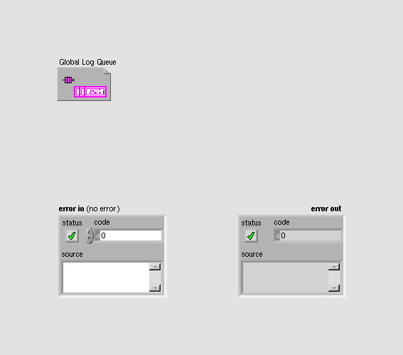
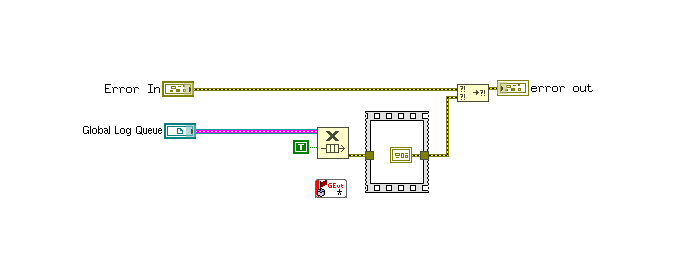
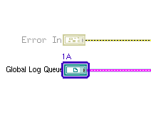
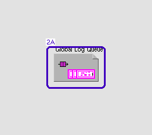

LabVIEW VI Comparison Report
06:57:42 10/29/2026
First VI: /workspace-base/src/user.lib/_NEVSTOP/Communicable State Machine(CSM)/AdvanceAPI/CSM - Destroy Global Log Queue.viSecond VI: /workspace/src/user.lib/_NEVSTOP/Communicable State Machine(CSM)/AdvanceAPI/CSM - Destroy Global Log Queue.vi
| Front Panel Overview | ||
|
 |

| |
| Block Diagram Overview | ||

|
 |
- Front Panel
- Front Panel Position/Size
- Block Diagram Functional
- Block Diagram Cosmetic
- VI Attribute
Detailed Information
1. Block Diagram objects
| /workspace-base/src/user.lib/_NEVSTOP/Communicable State Machine(CSM)/AdvanceAPI/CSM - Destroy Global Log Queue.vi | /workspace/src/user.lib/_NEVSTOP/Communicable State Machine(CSM)/AdvanceAPI/CSM - Destroy Global Log Queue.vi | |
|
 |

|
- Front Panel Terminal "Global Log Queue" - refnum kind : changed
2. Front Panel - Queue Refnum
| /workspace-base/src/user.lib/_NEVSTOP/Communicable State Machine(CSM)/AdvanceAPI/CSM - Destroy Global Log Queue.vi | /workspace/src/user.lib/_NEVSTOP/Communicable State Machine(CSM)/AdvanceAPI/CSM - Destroy Global Log Queue.vi | |
|
 |

|
- Queue Refnum "Global Log Queue" - refnum kind : changed
3. VI Attribute - Documentation (VI Properties)
- description text : changed from "Releases the global log queue refnum. > [!NOTE] CSM Global Log Functionality > > The CSM Global Log functionality is used to view global log change events, serving scenarios such as debugging and monitoring. > The following is the information that can be logged: > - Module state modifications > - Inter-module message communication, including data returns > - Module status publishing > - Module creation and destruction > - Module state registration and unregistration > - Error information handled by modules > - User-defined events > > Debugging tools are primarily developed based on the Global Log API. You can develop debugging tools according to your own needs. > [!NOTE] CSM Global Log Acquisition Methods > > CSM provides two methods for acquiring global logs: Queue and Event. The Queue processing method is recommended because the queue interface is more efficient and offers greater flexibility in selecting log processing schemes based on the number of accumulated logs in the queue. Reference Examples: - `4. Advance Examples\Filter From Source(Queue).vi` - `4. Advance Examples\Filter From Subscriber(Queue).vi` -- Controls -- - Global Log Queue: Global log queue refnum." to "Releases the global log queue refnum. > [!NOTE] CSM Global Log Functionality > > The CSM Global Log functionality is used to view global log change events, serving scenarios such as debugging and monitoring. > The following is the information that can be logged: > - Module state modifications > - Inter-module message communication, including data returns > - Message completion records of asynchronous and synchronous messages, `AsyncMsg Complete` and `SyncMsg Complete`, which carry the response > - Module status publishing > - Module creation and destruction > - Module state registration and unregistration > - Error information handled by modules > - User-defined events > > Debugging tools are primarily developed based on the Global Log API. You can develop debugging tools according to your own needs. > [!NOTE] CSM Global Log Acquisition Methods > > CSM provides two methods for acquiring global logs: Queue and Event. The Queue processing method is recommended because the queue interface is more efficient and offers greater flexibility in selecting log processing schemes based on the number of accumulated logs in the queue. Reference Examples: - `4. Advance Examples\Filter From Source(Queue).vi` - `4. Advance Examples\Filter From Subscriber(Queue).vi` -- Controls -- - Global Log Queue: Global log queue refnum."